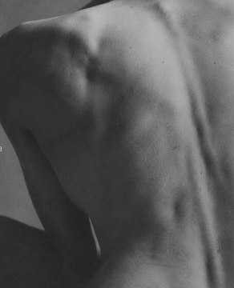
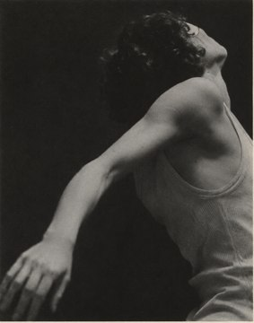
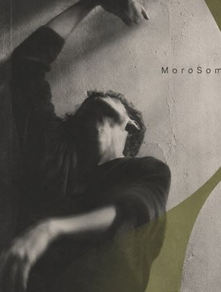
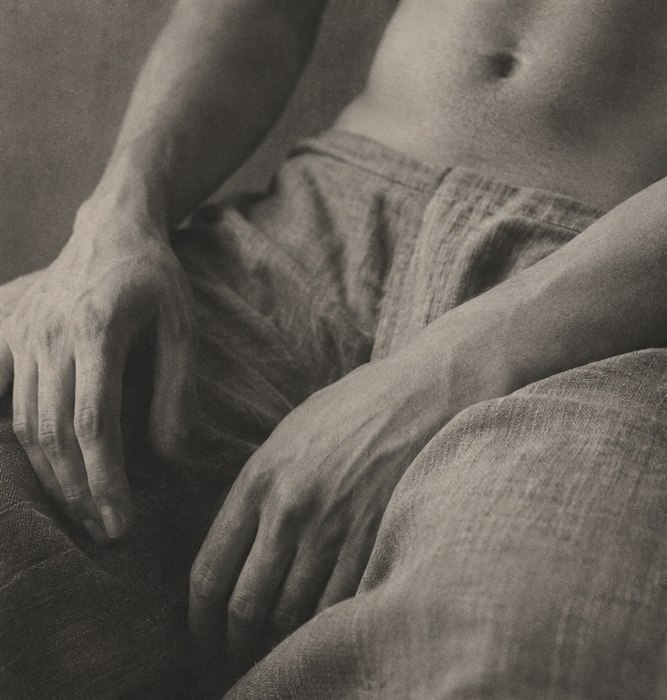

Миникурс · самостоятельная практика
Уютно в теле
Небольшой курс для глубокого расслабления и освобождения поясницы
от привычного напряжения.
Вроде и кресло удобное, и обстановка располагает к отдыху, а в
собственном теле всё равно неуютно.
Спина не существует отдельно от остального тела. Именно поэтому
три урока курса дополняют друг друга, постепенно освобождая
заднюю, переднюю и боковую поверхности тела.
Три соматических урока
01
Освобождение поясницы и задней поверхности тела
Учимся чувствовать и расслаблять мышцы-разгибатели, возвращая
пояснице подвижность и лёгкость.
Для меня этот урок когда-то стал самым впечатляющим — с него
началось моё практическое знакомство с соматикой.

02
Освобождение передней поверхности тела
Работаем с мышцами грудной клетки, живота и внутренней
поверхности бёдер. Продолжаем и уравновешиваем работу первого
урока, открывая больше пространства для дыхания.

03
Освобождение центра тела
Работаем с мышцами талии и поясницы. Исследуем, насколько
живым и подвижным может быть центр нашего тела и как много от
него зависит в самых привычных движениях.

Отдыхать — тоже умение.
В курс также входят четыре записи сканирования тела — практики
глубокого расслабления и внимательного исследования собственных
ощущений.
Вы можете выбрать звуковое сопровождение по своему вкусу:
тишину, поющие чаши или звуки космоса.
К этим записям приятно возвращаться и независимо от основных
уроков.

В стоимость курса входят:
- Три полноценных соматических аудиоурока.
- Четыре записи сканирования тела.
- Рекомендации по самостоятельной практике.
После приобретения курса вы сможете присоединиться к закрытому
сообществу MoroSoma, где можно делиться впечатлениями от
занятий, общаться с другими участниками и задавать мне вопросы.
Мне самому всегда интересно узнавать, что люди открывают для
себя в процессе практики.
Занимайтесь дома, возвращайтесь к урокам и записям тогда, когда
вам этого хочется.
Для покупки напишите мне в Telegram.